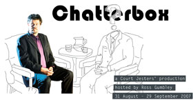
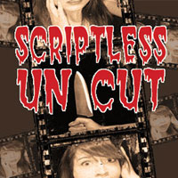
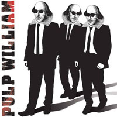
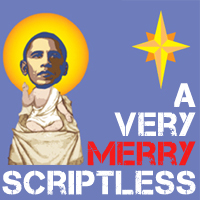
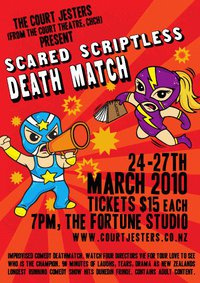
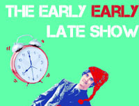

Radio Ha Ha
A rapid-fire, off-the-cuff 1930s radio show that was transplanted to 2007 and shaped entirely around audience suggestions to create news, interviews and thrilling serials that never seen – or heard – before. Packed with thrills and spills and complete with live sound effects and music, this loving homage to the golden age of the wireless proved so popular that it was aired on Radio NZ National.

Chatterbox
The Court Jesters got up close and personal with local celebrities in this 2007 chat-style show. After a live interview with Artistic Director Ross Gumbley, four of our top improvisers replayed stories from the lives and careers of famous Cantabrians. Guests included Garry Moore, Margaret Mahy, Steve Gurney, David McPhail and Ruth Dyson.

Scriptless Uncut
With the glitz and glamour of a Hollywood awards ceremony, The Jesters romped across genres, styles and the bounds of political correctness to create 2008’s Scriptless Uncut. Tackling everything from art-house, melodrama and independent film to schlock horror, science fiction and big-budget blockbusters, Scriptless Uncut was a love letter to an industry that shoots too many pictures and not enough actors.

Pulp William
Three performers broke out of their cages after being locked up with Shakespeare’s Complete Works and a set of Tarantino DVDs to create a unique mix of star-crossed lovers, bad-ass gangsters, Mexican stand-offs, Italian surnames, cunning plots, poison, handguns, sonnets and fast-paced dialogue laden with pop culture references and extended metaphors – all in a plot with more twists than a night at Jack Rabbit Slim’s. An improvised comedy mash-up that blew audiences away.
Forsooth ’twas devilish fun.
Presto Magazine
Packs enough comedy to appeal to anyone
CANTA

A Very Merry Scriptless
Masters of improvised mayhem The Court Jesters give their fast-paced, furiously funny brand of comedy a festive feel every year in A Very Merry Scriptless, which annually features holiday-themed content suitable for the whole family. An improvised theatrical Christmas cracker for all ages.

Scared Scriptless: Improv Deathmatch
Appearing at the Dunedin Fringe Festival 2010, Improv Deathmatch featured four improvisational gladiators battling it out to create the most amusing, intriguing, endearing and unexpected theatre imaginable, with the audience deciding the victor.
A rollercoaster of a journey from the sedateness of Jane Austen to the terrifying future visions of an audience member’s life as a rural doctor and part time pig slaughterer.
Theatreview

The Early Early Late Show
Very, very funny at an early, early time, the show that’s come to be known as EELS offers plenty of audience participation and laughs for all ages in a show that you can take the whole family to see without sailing too far past the kids’ bedtime. If you’re scared of Scared Scriptless, The Early Early Late Show is the perfect introduction to the Jesters’ brand of improvised mayhem.